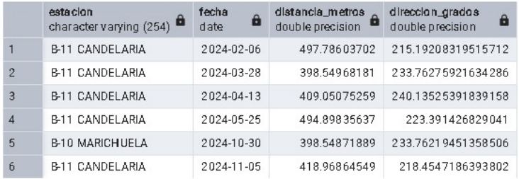

1. El Problema: `geometry` con Latitud y Longitud
A menudo, nuestros datos espaciales vienen en coordenadas geográficas (latitud y longitud), asociadas al SRID 4326. Aunque podemos almacenar y visualizar estos datos con el tipo geometry, surge un gran problema cuando intentamos realizar mediciones.
Como el tipo geometry asume un plano cartesiano, cualquier cálculo de distancia o área sobre datos en SRID 4326 se realizará en grados, no en metros. Esto produce resultados que no son prácticos ni intuitivos.
Ejemplo: Calcular la distancia entre dos incidentes en Tunjuelito usando el tipo geometry.
SELECT ST_Distance(
a.geom,
b.geom
) AS distancia_en_grados
FROM
incidentes_2024_tunjuelito a,
incidentes_2024_tunjuelito b
WHERE a.id = 1 AND b.id = 2;El resultado podría ser algo como 0.04128. ¿Qué significa eso? Es una distancia angular, pero no nos dice nada sobre los metros o kilómetros reales entre los dos puntos, ya que la longitud de un grado varía dependiendo de la latitud.
2. La Solución: El Tipo de Dato `geography`
Para resolver este problema, PostGIS ofrece el tipo de dato geography. Este tipo está diseñado específicamente para trabajar con coordenadas geográficas (latitud/longitud) y realiza todos sus cálculos sobre un modelo esférico de la Tierra.
Esto significa que al usar geography, las funciones como ST_Distance devolverán resultados precisos en metros, sin necesidad de reproyectar los datos.
Ejemplo: Calcular la misma distancia, pero usando el tipo geography.
SELECT ST_Distance(
a.geom::geography,
b.geom::geography
) AS distancia_en_metros
FROM
incidentes_2024_tunjuelito a,
incidentes_2024_tunjuelito b
WHERE a.id = 1 AND b.id = 2;
Fíjate en la sintaxis ::geography. Esto se llama "casting" y convierte temporalmente el dato de geometry a geography para el cálculo. El resultado ahora será un valor directamente interpretable, como 4567.14 metros.
| Cálculo con `geometry` (grados) | Cálculo con `geography` (metros) |
|---|---|
| 0.0412856 | 4567.1482 |
3. ¿Cómo y Cuándo Usar `geography`?
Uso del Tipo `geography`
Para usar el tipo geography de forma permanente, tus datos deben estar en SRID 4326. Puedes crear una nueva tabla convirtiendo la columna geometry.
CREATE TABLE incidentes_geog AS
SELECT
fecha,
estacion,
geom::geography AS geog -- Casting a geography
FROM incidentes_2024_tunjuelito;También es fundamental crear un índice espacial en la nueva columna geog para mantener un buen rendimiento en las consultas.
CREATE INDEX incidentes_geog_gix ON incidentes_geog USING GIST (geog);¿Cuándo usar `geometry` vs. `geography`?
| Escenario | Usar `geometry` | Usar `geography` |
|---|---|---|
| Datos locales (una ciudad o región) | Recomendado (con una proyección local como EPSG:9377) | Posible, pero menos eficiente. |
| Datos globales (varios países o continentes) | Complicado, requiere manejar múltiples proyecciones. | Recomendado. |
| Necesito acceso a la gama más amplia de funciones de PostGIS | Sí, tiene más funciones disponibles. | No, tiene un conjunto de funciones más limitado. |
| La prioridad es la máxima precisión en mediciones de distancia/área con lat/lon | No, requiere transformar a un SRID proyectado. | Sí, es su principal ventaja. |
Recomendación general: Si tus datos cubren un área pequeña (como Bogotá), es mejor usar el tipo geometry con una proyección local apropiada (ej. Origen Nacional, SRID 9377). Si tus datos son globales o si la simplicidad de obtener mediciones en metros directamente desde latitud/longitud es tu prioridad, geography es una excelente opción.
4. Ejercicios Prácticos con `geography`
La función ST_DWithin es especialmente poderosa con el tipo geography, ya que nos permite buscar elementos dentro de un radio en metros.
Ejemplo: Encontrar todas las estaciones a 500 metros de un punto de referencia (-74.123, 4.567).
-- Usamos la tabla con la columna 'geog' que creamos antes
SELECT
i.estacion,
ST_Distance(
'SRID=4326;POINT(-74.123 4.567)'::geography,
i.geog
) AS distancia_metros
FROM incidentes_geog i
WHERE ST_DWithin(
'SRID=4326;POINT(-74.123 4.567)'::geography,
i.geog,
500 -- La distancia del buffer es en metros
);Esta consulta es muy eficiente gracias al índice espacial y devuelve todas las estaciones dentro del radio de 500 metros, junto con la distancia exacta a cada una.
